BOX3D / IMAGEGEN STUDY 02The river observatory.
Two new visual targets, followed by a refinement of the live bridge, woodland, foundations and current. The crossing remains interactive, with recorded structural failure and replay.
Generated visual targets
ImageGen concepts · these are references, not screenshots of the simulator.
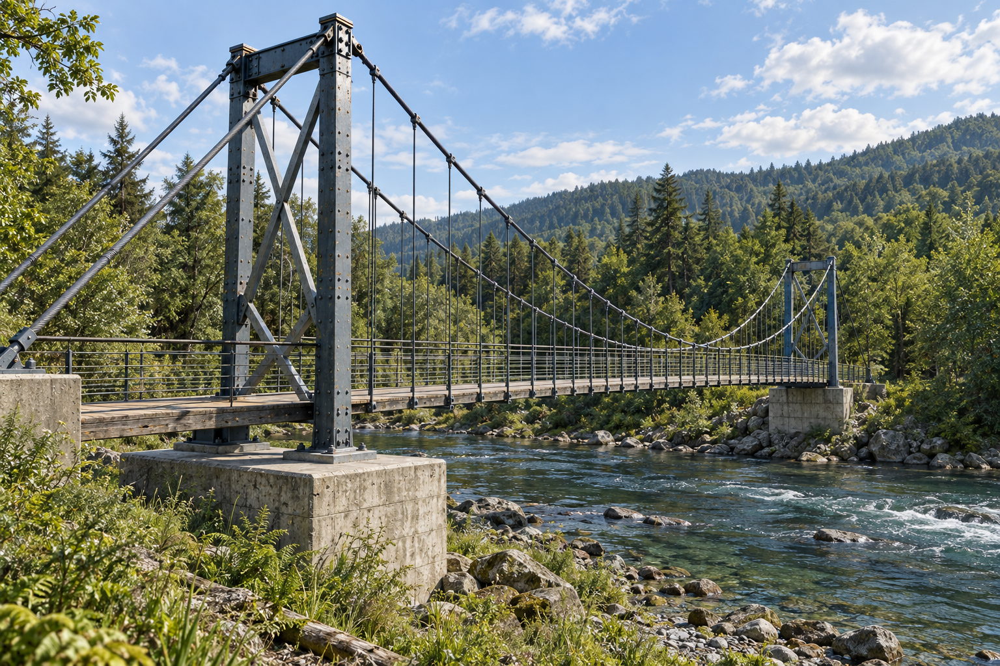
Full river crossing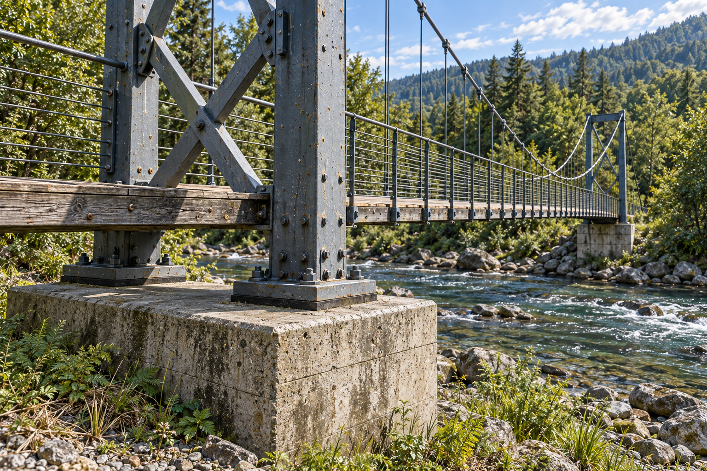
Steelwork, concrete and bank plantingThe live reconstruction
Captured from the same production build. Geometry and visual correspondence are assessed separately.
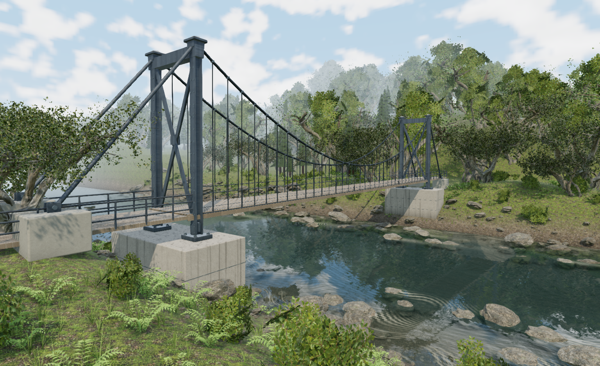
Actual live geometry · River crossing camera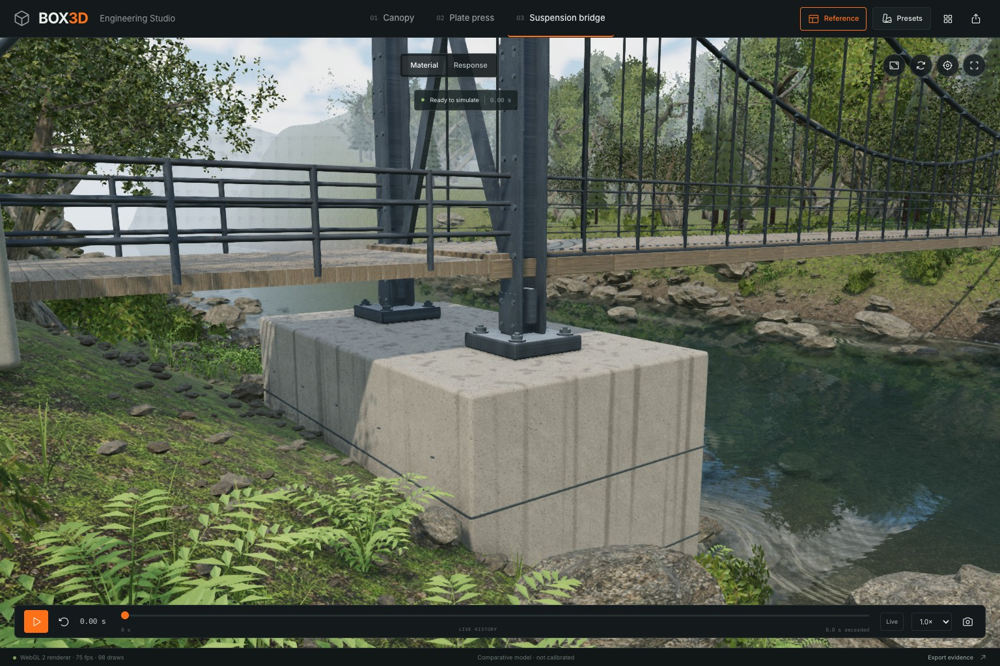
Weathered steel, fasteners, timber fascia and cast concrete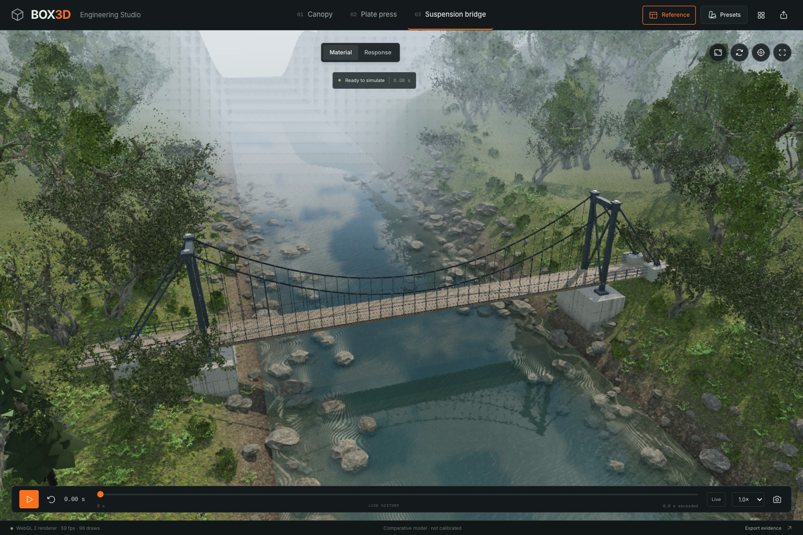
Reverse inspection above the river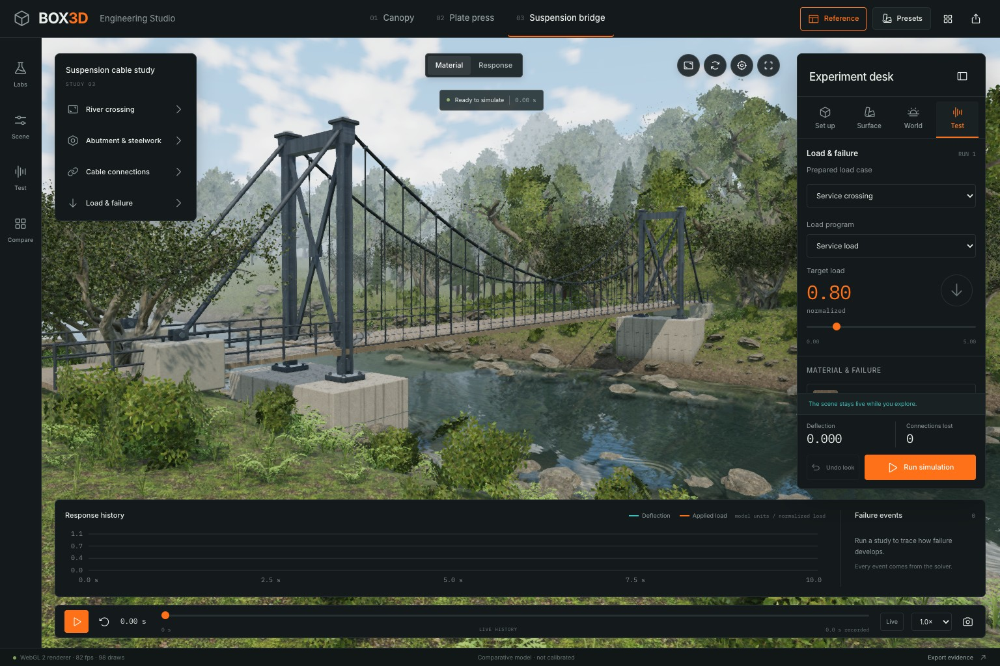
Experiment desk and recorded response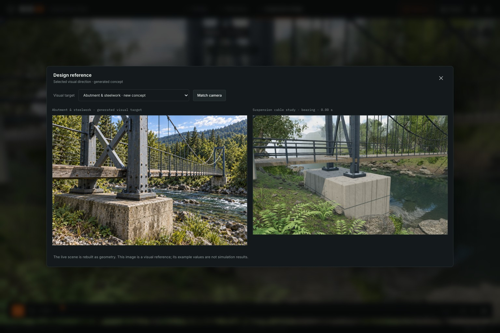
Built-in concept comparison and camera alignment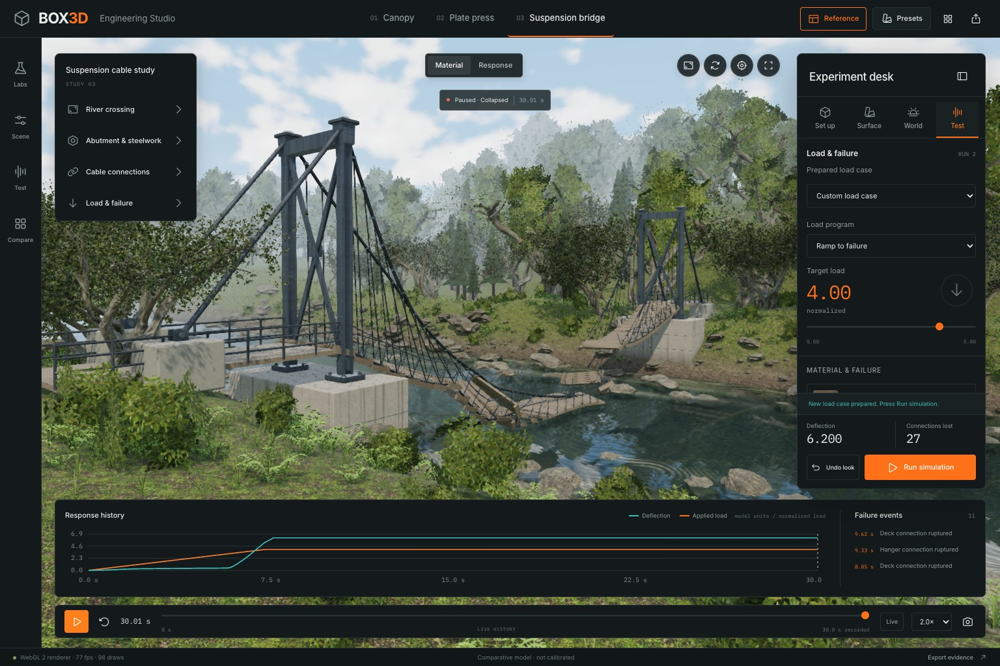
Recorded collapse · 27 broken connections · 30 model secondsSmaller screens
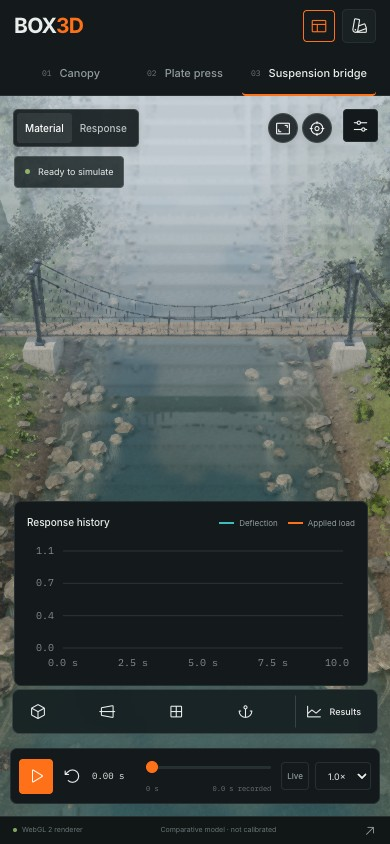
390 × 844 · complete span, clear of foreground trees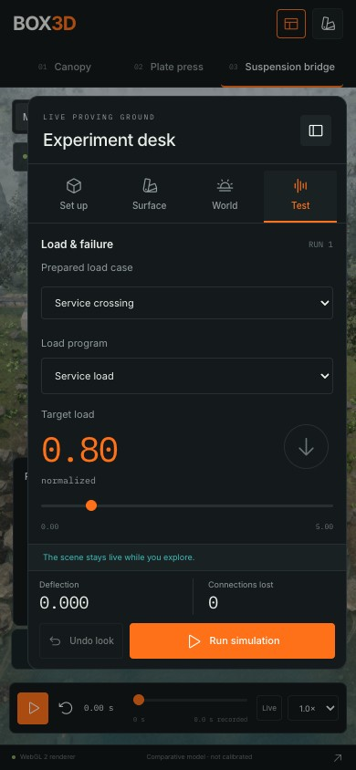
390 × 844 · experiment desk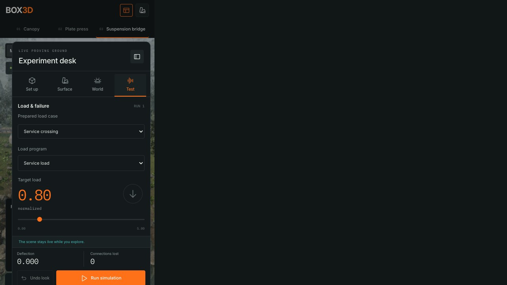
1280 × 720 · protected tower framing and readable graph ticks